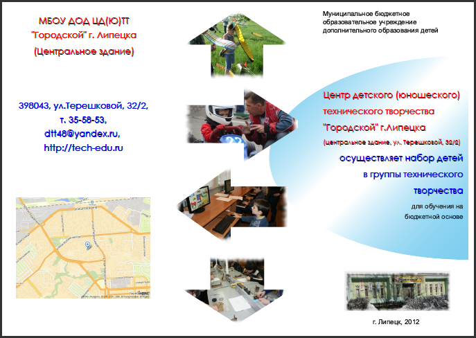
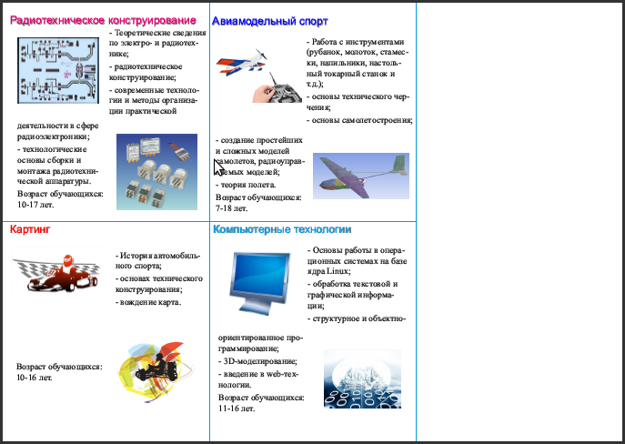

Практическое введение в Scribus
Буклет представляет собой лист имеющий несколько сгибов и содержащий текстовую и графическую информацию. Буклеты часто используют для массового распространения информации о каком-либо событии или организации.
На этом занятии мы создадим буклет, содержащий сведения об учреждении технического творчества. В архиве находятся изображения и текстовый файл odt.
Примерный внешний вид результата:


Создайте документ со следующими характеристиками:
Теперь следует установить направляющие линии, которые обозначат места сгиба и помогут разместить материал. У нас будет по три вертикальных линии на обоих страницах (для сгиба), и одна горизонтальная только на втором листе (для ровного расположения материала).
Выполните команду Страница → Управление направляющими. На вкладке "Столбцы/строки" добавьте две вертикальные направляющие и нажмите кнопку "Применить ко всем страницам". Сделайте активной вторую страницу и добавьте одну горизонтальную направляющую.
Правая треть первой страницы — это передняя обложка буклета, центральная часть — задняя обложка, левая треть при сгибе окажется вложенной внутрь. Вторая страница представляет собой внутреннюю сторону буклета. На первой странице будет размещаться общая информация об организации, а на второй — информация об объединениях (кружках), функционирующих на ее базе.
Сначала займемся второй страницей. Пусть у нас будет всего четыре объединения: "Радиотехническое конструирование", "Картинг", "Авиамоделизм" и "Компьютерные технологии". На каждое объединение отводится одна ячейка, образованная направляющими. Одну треть второй страницы оставим пустой для заметок или расписания. Расписание обычно размещают в таблице, которую проще подготовить в текстовом редакторе, чем в Scribus. Поэтому сначала можно распечатать буклет, а потом "прогнать" лист через принтер второй раз и распечатать расписание, правильно разместив его на странице.
Создайте блок с текстом "Радиотехническое конструирование". Это будет заголовок объединения. Настройте размер, цвет и тень шрифта через панель свойств. Скопируйте блок в три другие ячейки и измените текст в соответствии с существующими объединениями.
В каждой ячейке из направляющих будет размещено две картинки и два текстовых блока. Создавать каждый блок по отдельности не лучшее решение. Поэтому воспользуемся инструментом "Таблица" (A).
Растяните таблицу от левого нижнего края текстового блока с названием объединения, до нижнего правого угла ячейки из направляющих. В появившемся окне укажите 2 столбца и 2 строки. Скопируйте таблицу в три другие ячейки.
После этого каждую таблицу следует разгруппировать, а половину ячеек в шахматном порядке преобразовать к изображениям (в контекстном меню: Преобразовать в → Изображение; или в обычном меню: Объект → Преобразовать в → Изображение).
Загрузите изображения в соответствующие им блоки. Впишите изображения в блоки.
Уменьшите немного все текстовые блоки и свяжите их между собой, чтобы загрузив текст в первую, он "растекся" по остальным блокам. При связывании блоков учтите, что информация в текстовом документе имеет следующую последовательность: 1) об объединении радиотехнического конструирования, 2) картинге, 3) авиамоделизме, 4) компьютерных технологиях.
Загрузите текст и отредактируйте его стиль. Чтобы текст правильно «растекся» по своим ячейкам, подгоните размер текстовых блоков под объем соответствующего им текста.
Самостоятельно оформите первую страницу примерно так, как показано на рисунке выше.
Выполните экспорт публикации в формат pdf. Посмотрите результат.
Обращаем внимание на то, что при печати брошюр важно убрать масштабирование страницы в программе, из которой осуществляется печать.